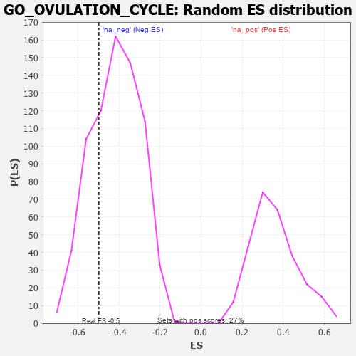

| | | Dataset | 7d |
| Phenotype | NoPhenotypeAvailable |
| Upregulated in class | na_neg |
| GeneSet | GO_OVULATION_CYCLE |
| Enrichment Score (ES) | -0.49854806 |
| Normalized Enrichment Score (NES) | -1.1973186 |
| Nominal p-value | 0.2596154 |
| FDR q-value | 0.6417967 |
| FWER p-Value | 1.0 |
Table: GSEA Results Summary
 Fig 1: Enrichment plot: GO_OVULATION_CYCLE
Fig 1: Enrichment plot: GO_OVULATION_CYCLE
Profile of the Running ES Score & Positions of GeneSet Members on the Rank Ordered List
| PROBE | GENE SYMBOL | GENE_TITLE | RANK IN GENE LIST | RANK METRIC SCORE | RUNNING ES | CORE ENRICHMENT | | 1 | TGFB3 | | | 49 | 2.654 | 0.1836 | No |
| 2 | SRC | | | 1128 | 0.459 | 0.0809 | No |
| 3 | SGPL1 | | | 1820 | 0.334 | 0.0180 | No |
| 4 | HAS1 | | | 2722 | 0.195 | -0.0813 | No |
| 5 | SLIT2 | | | 2724 | 0.195 | -0.0675 | No |
| 6 | GAS2 | | | 3392 | 0.090 | -0.1449 | No |
| 7 | ROBO2 | | | 4066 | -0.018 | -0.2282 | No |
| 8 | SLIT3 | | | 4890 | -0.175 | -0.3191 | No |
| 9 | FZD4 | | | 4940 | -0.186 | -0.3120 | No |
| 10 | PTPRN | | | 6007 | -0.474 | -0.4121 | Yes |
| 11 | EGR1 | | | 6165 | -0.527 | -0.3941 | Yes |
| 12 | EGFR | | | 6708 | -0.765 | -0.4075 | Yes |
| 13 | MMP19 | | | 7433 | -1.309 | -0.4049 | Yes |
| 14 | CASP2 | | | 7442 | -1.322 | -0.3114 | Yes |
| 15 | CASP3 | | | 7747 | -1.902 | -0.2135 | Yes |
| 16 | ARRB1 | | | 7935 | -3.377 | 0.0045 | Yes |
Table: GSEA details [plain text format]

Fig 2: GO_OVULATION_CYCLE: Random ES distribution
Gene set null distribution of ES for GO_OVULATION_CYCLE